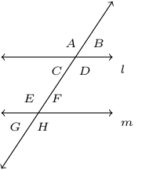
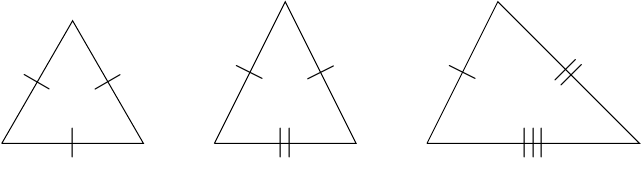

Section 1.2
Given:

An example of alternate interior angles would \(E\) and \(D\). This also means that \(E=D\).
An example of alternate exterior angles would be \(A\) and \(H\). This means \(A=H\).
From the image above would should know that \(D+F=180^{\circ}\). Further, \(F=B\).
The sum of the measures of the angles of any triangle is \(180^{\circ}\).
Definition 1.4. The following triangles are named from left to right: Equilateral, Isosceles, and Scalene.

\(\triangle ABC\) is similar to \(\triangle DEF\) if the following conditions hold true:
Corresponding angles have the same measure.
Corresponding sides are proportional.